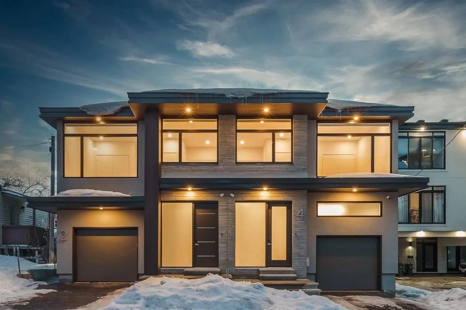
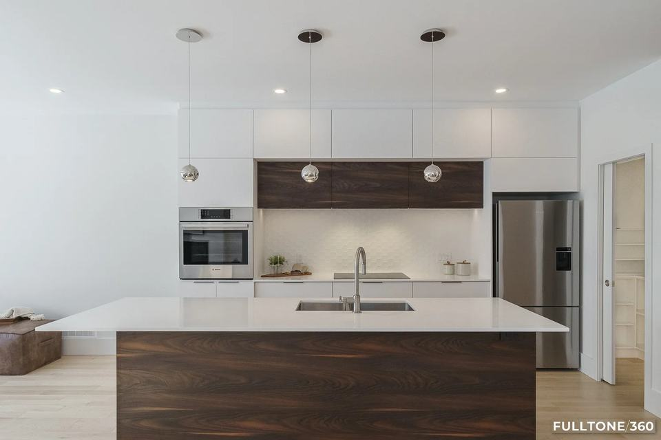

Residential · Ottawa · 2022
A pair of thoughtfully finished semis on Beechwood — solid envelope, refined interiors, and the day-to-day site oversight that keeps a neighbourhood build on track.


Interested in a similar build? info@blueprintbuilds.com